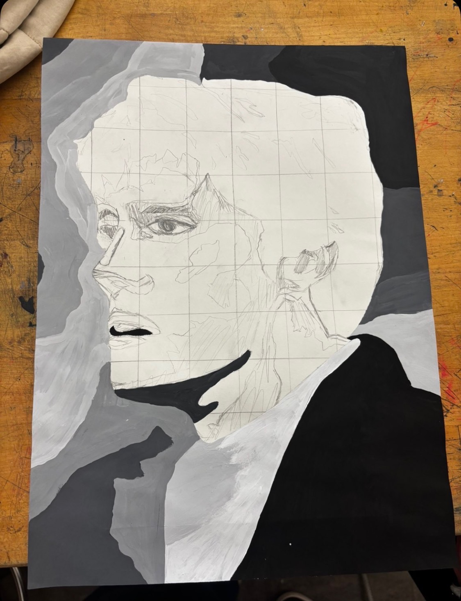
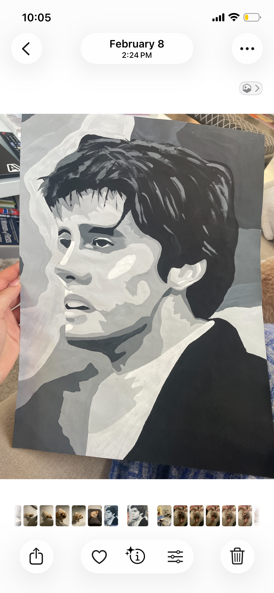
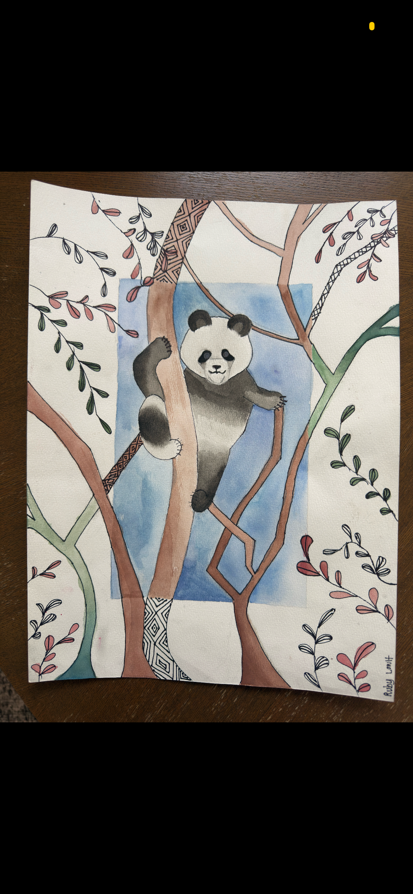
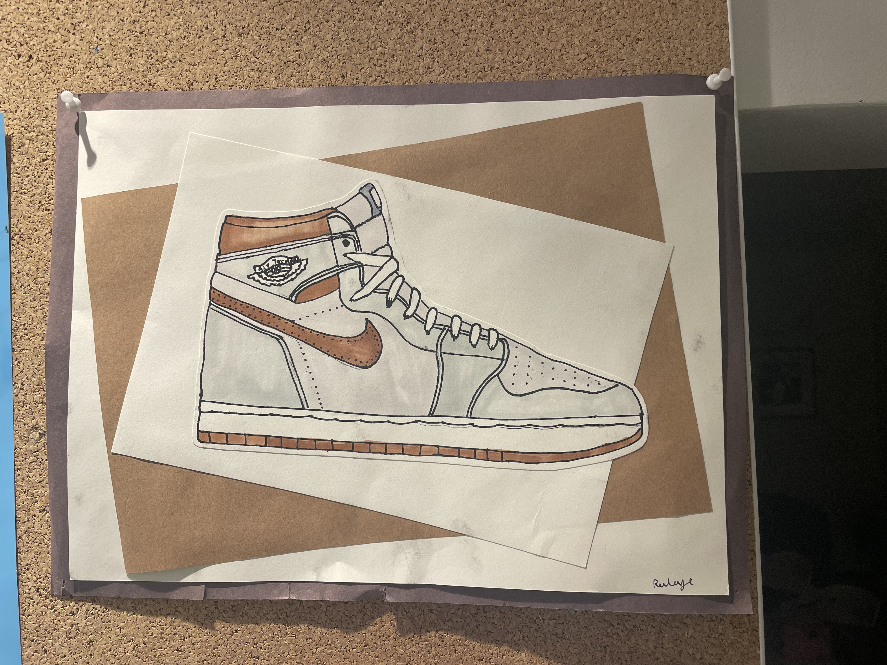
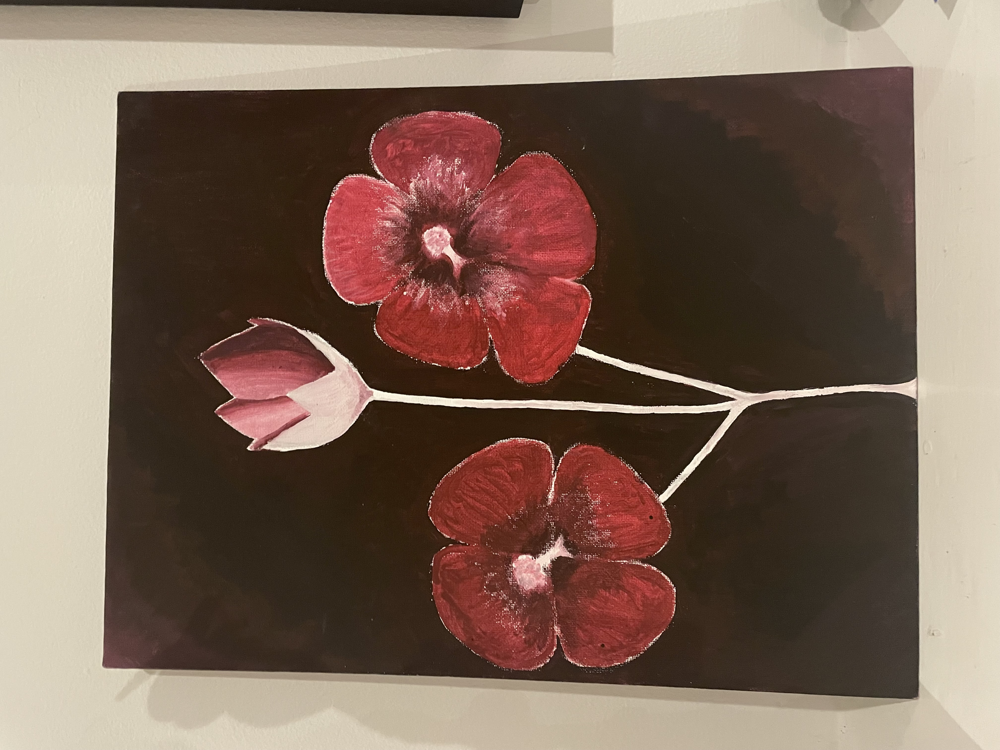

Ruby Lowit
Do you see yourself as an artist or a creator?
In some way yes... In art class, I do art. And I feel like I'm creative. Sometimes.
What are the different forms of art you have explored? What have you enjoyed? What have you not enjoyed?
Painting, Drawing, Blanket Crocheting, Collage, Idea Creation for Projects, Pottery. We did this shading thing in class that I did not like, it was kind of boring.
When you make art, where do you get your inspiration from?
If I see someone do it and then I want to do it, I just do it. Like with the chunky blankets, I probably saw someone on YouTube doing it and I was like, ooh, that looks cool. So, I made it. In class, we are prompted things and then I build off those prompts. Some things I see and I can't control if I am creative with or not.
What is your favorite thing about making art? Is there a part of the art making process that frustrates you?
I think it is very calming and rewarding. I think when you see your effort and then sometimes when it turns out good, you feel rewarded. But then also it clears your mind. I get annoyed when I don't do something as good as I could have. When I can't go back.
How do you think growing up with access to social media or the internent has impacted your creative pursuits?
I think it was honestly good because a lot of the stuff gave me inspiration, and then I worked off of that. It's like the blankets, and I started incorporating my own personality into it or making ones for other people. So, I think without that, I wouldn't have done all the blankets and stuff, it was a good starting point.
Do you think art will always be an activity you pursue, even as life gets crazt?
I think aspects of it just carry on with your life. It doesn't have to be art. I think that a creative outlet stays with you throughout life. It's not on my mind 24/7 but I'll remember that I can and have the opportunity to.
Gallery




